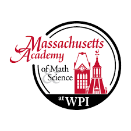

Placeholder

Hi, I’m Darshan Krishnaswamy, a junior at Mass Academy. I'm from Chelmsford, MA, which is located just south of Lowell.
I attended Chelmsford High School from first grade through tenth grade. I have an older brother named Ashwin, who is currently a junior at Purdue University
majoring in Data Science.

At Chelmsford High School, I was part of my school’s math team, science team, speech and debate team, and DECA.
In math team, I competed in many local competitions in the Greater Boston Math League along with larger competitions such as the AMC 10/12 and AIME.
I also competed in Eastern Mass ARML and attended the competition at Penn State. In science team, I competed in local and state competitions as part of the
West Suburban Science League and the state Science Olympiad, along with some other local events such as the Blue Lobster Bowl, an oceanography competition at
MIT. For DECA, I competed in the Personal Financial Literacy event and qualified for the state competition. In Speech and Debate Team, I did public forum debate
for two years and competed in a bunch of competitions, including the international competition at Harvard. You can click on the image on the right to learn more about Chelmsford High School

Outside of school, my main hobbies are tennis and computer science. I was on my school’s junior varsity tennis team for the last two years. Although I
am not great at playing tennis, I still find it enjoyable, especially when I’m bored and it’s nice outside. For cs, I enjoy making Android applications and have been developing
them since eighth grade (and am still learning a lot as I continue creating them).

Another major hobby of mine is robotics. I was part of a First Robotics Competition (FRC) team called Stormgears in my freshman and sophomore years.
In FRC, we build 120 pound robots that have to compete in a certain challenge. Last year’s challenge was space-themed and involved picking up discs and balls
and placing them in designated areas to earn points. The team qualified for the FIRST world championship in Detroit both years, and we made it to the Einstein field
(top 24 teams) in my freshman year. I am looking forward to joining Mass Academy’s FRC team this year. You can click on the image on the right to learn more about First Robotics

At Mass Academy, so far, I have joined the CAD (computer aided design) club, math team, actuarial math club, and the disc golf team. I am looking forward to joining the
Cyberpatriot and FRC teams, along with a few others, once they start.